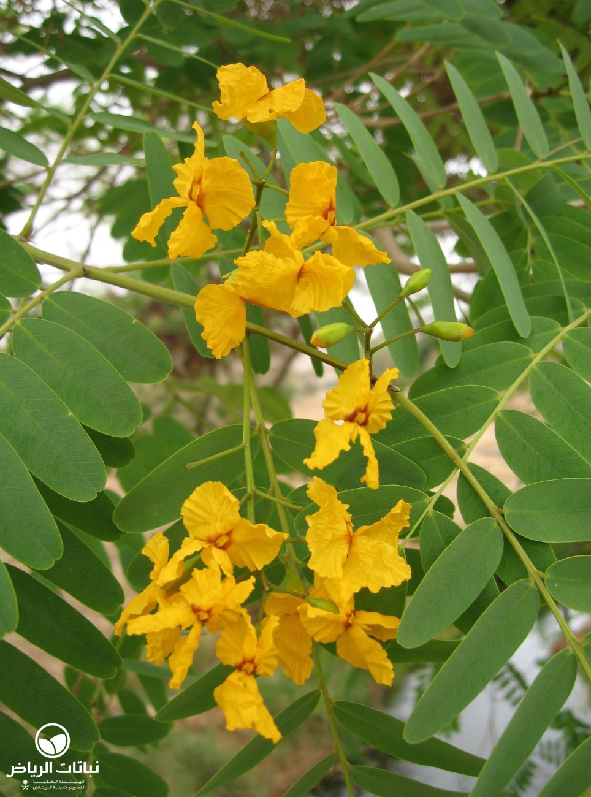
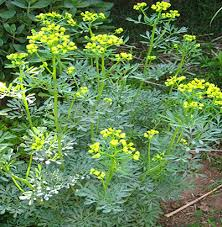

صبار القلعة السحرية اسمه العلمي Cereus tetragonus نبات موطنه الأصلي البرازيل وأمريكا الجنوبية، وسمي بالعربية بذلك الاسم لأن نمواته الجانبية تشبه الأبراج الموجودة في القلاع السحرية في القصص الخيالية. يصل ارتفاعه مع العناية إلى ما يقارب 1.8 متر. عادة لا يزهر خارج بيئته إلا بتوفر العناية بجعل مكانه شبه مطابق لبيئته الأصلية، وأزهاره تظهر عند عمر عشر سنوات وتتفتح في الليل وهي كبيرة الحجم بيضاء اللون.
صبار القلعة السحرية
شجرة فيكس لسان العصفور (Ficus Religiosa )موطنها الأصلي الهند، وتذكر بعض المراجع الأحدث أن موطنها سيريلانكا. النبتة من الفصيلة التوتية ومما يميزها لون أوراقها الأخضر الزيتي ذو الشكل القلبي المنتهي بقمة طويلة دقيقة هي سبب تسميتها العربية بلسان العصفور معدل نمو هذه الشجرة سريع إلى حدٍ ما، وقد يصل ارتفاعها إلى 30 متراً في بيئتها الطبيعية تعتبر من الأشجار نصف الظليلة كون أغصانها متفرقة ومتفرعة وتسمح بقدر لا بأس به من الضوء بالتسرب خلالها، وتعتبر من الأشجار مستديمة الخضرة رغم تساقط أوراقها؛ نظراً لأن فترة تساقط الأوراق وبقائها بدون ورق فترة قصيرة، الغرض من زراعتها الزينة والظل و مصدات للرياح.
لسان العصفور
مما يميز نبات صبار صدر الحجل (Aloe Variegata) شكل وألوان أوراقه فالأوراق مثلثة
الشكل ولونها أخضر داكن مخطط بألوان تميل للبياض على شكل الرقم 7 وتنمو الأوراق مصطفة دائرياً توحي لك بأنها
زهرة خضراء، علماً بأن النبات يزهر نهاية الشتاء وبدايات الربيع وأزهاره حمراء اللون، ويتراوح طول النبات من 15 إلى 30 سنتيمتر.
صبار صدر الحجل
سيكاس أو ذيل الجمل (Cycas Revoluta) يمكن تربيته كنبات داخلي أيضاً بشرط تعريضه دائماً لأشعة الشمس المباشرة صيفاً وشتاءً، وموطن هذا النبات يمتد من اليابان حتى كوينزلاند، ويوجد في الهند ومدغشقر، شبيه بأشجار النخيل ويتميز بأنه بطيء النمو، وبعض أنواعه قد يصل ارتفاعها إلى 15م.
سيكاس
جلد النمر (Sansevieria Trifasciata) موطنه الأصلي أفريقيا الغربية الاستوائية، وله عدة أنواع تختلف في أحجامها ودرجات تلون أوراقها، يتحمل انخفاض الرطوبة والتعرض لتيارات الهواء وجفاف التربة ويفضل الجو الجاف في الشتاء أي الرطوبة المنخفضة ويتحمل زيادة البرودة بدرجة كبيرة جداً ولفترات طويلة، ينمو نبات جلد النمر فيالضوء الساطع وكذلك في الظل الخفيف وفي المناخ الدافئ يزرع نبات جلد النمر لجمال لون أوراقه في الحدائق الصخرية مع غيره من الصباريات أو منفرداً، ويمكن زراعته في أصص كنبات داخلي ولكن ليكن قريباً من النافذة حيث الضوء والدفء.
جلد النمر
الصبار (Aloe) نبات عصاري (لحمي) من السهل تربيته وموطنه جنوب أفريقيا، أوراقه حادة الأطراف والنبات محب للشمس ويوجد منه عدة أنواع.
ويزرع النبات للتجميل في الحدائق الصخرية أو منفرداً، وتستعمل عصارته لمعالجة الحر
وق خاصةً الحروق الناتجة من التعرض لأشعة الشمس فترات طويلة ولأغراض طبية أخرى، حيث يؤخذ قطعة منه وتكسر ويوضع
السائل الناتج من مكان الكسر على المنطقة المصابة فيخفف الألم بشكل كبير.
الصبار
شجيرة ملكة الليل اسمها العلمي (Cestrum Nocturnum) هي شجيرة مستديمة الخضرة قد ترتفع 3 أمتار ولو تركت بدون تقليم فقد ترتفع لعدة أمتار وتفرعها كثيف وتنتج إكليلاً من الزهور البيضاء ذات رائحة فواحة وتتفتح هذه الأزهار فقط في ا لمساء لذلك سميت ملكة الليل حيث تغطي روائحها الزكية مساحة الحديقة المنزلية التي توجد فيها، ويوجد منها أنواع أخرى حسب لون أزهارها فمنها الصفراء أو البنفسجية أو الأرجوانية. وتنمو بمعدل سريع نسبياً تزرع ملكةالليل لأغراض منها رائحة أزهارها الزكية، وكذلك تزرع كسياج للحديقة لأنها تقبل التقليم. وهي كشجيرة ليس لها منظر ذا قيمة جمالية.
ملكة الليل
شجرة النيم أو الأزدراخت واسمها العلمي Azdirachta Indica Neem. موطنها الأصلي الهند وبورما و سيريلانكا واندونيسيا ويشمل هذا الجنس نوعان فقط من الأشجار المعمرة. سريع النمو وقد يصل ارتفاعه إلى حوالي 15 مترا أو أكثر. تزهر الشجرة خلال الفترة من مارس إلى مايو وأزهارها بيضاء عنقودية ذات رائحة عطرية. ولها أهمية طبية حيث تستخدم ثمارها وقلفها وأوراقها وأزهارها وجذورها في تحضير كثير من الأدوية المختلفة وحرق الأوراق يساهم في طرد البعوض والذباب، كما يمكنه تحمل الهواء الملوث بالغازات السامة لذلك تكثر زراعته في المناطق الصناعية.
النيم

شجرة اللبخ اسمها العلمي Albizia lebbeck هذا الجنس ينتمي للفصيلة القرنية، Leguminoideae، تحت الفصيلة الطلحية، Mimosoideae، ويشمل أنواع عدة قد تصل إلى 150 نوع ، وتضم هذه الأنواع أشجار غالباً وشجيرات وبعض المتسلقات، نموه سريع، وقد يصل ارتفاع الشجرة إلى 12 متر. تزهر في فصل الصيف، وأزهارها ذات روائح زكية ومن أهم ما يميزها مقاومتها للجفاف والعطش. موطنها الأصلي الهند ممتدة من الهملايا إلى بورما، ونباتنا هنا يسمى اللبخ أو ذقن الباشا، ومن اسماءه Silk Tree، يمكن استخدامها كشجرة ظل وأخشابها جيدة لاستعمالات عدة مثل الأثاث ، ووقود للتدفئة، كما أن أوراقها وأفرعها الغضة تصلح علف للحيوانات.
اللبخ
شجرة أبو المكارم أو الجاكرندا الصفراءواسمها العلمي Tipuana tipu من الأشجار ذات التساقط الجزئي للأوراق،وموطن هذه الشجرة المناطق الاستوائية وشبه الاستوائية. ترتفع شجرة أبو المكارم لتصل إلى حوالي 35م، لذلك تعتبر من الأشجار التي توفر ظلاً في المكان الذي تزرع فيه، كما تزهر هذه الشجرة في فصل الربيع أزهاراً ذهبية اللون تتجمع بكثافة في عدة مجموعات، من المهم الانتباه للمكان الذي يتم زراعة هذه الشجرة فيه كون جذوره تتسبب في اقتلاع الأرضيات والأرصفة، لذك ينبغي أن يراعى ذلك عند اختيار مكان زراعتها.
أبوالمكارم

سذاب أو كما يسميه البعض سذب أو سدب أو فَيْجَن واسمه العلمي Ruta graveolens. وهو نبات موطنه البحر الأبيض المتوسط
، وهو شجيرة مستديمة الخضرة وليست طويلة من 0.5 إلى 1م. تزهر صيفاً بأزهار صفراء متجمعة، وهي جاذبة للفراشات. والأوراق عطرية الرائحة، خضراء اللون،
مركبة من مجموعة وريقات بيضاوية الشكل متطاولة قليلاً.
السذاب

نبات الدلب اسمه العلمي Sesuvium portulacastrum. موطنه المناطق الاستوائية وشبه
الاستوائية، وينتمي إلى الفصيلة الأيزوية. وهو عشبي مداد معمر مزهر طوال العام، ولذلك
يعد من مغطيات التربة، يتميز بسرعة نموه وتحمله لكافة الظروف المناخية وكافة أ
نواع التربة خاصةً عالية الملوحة وفقيرة المواد العضوية، يمكن أن يصل ارتفاعه إلى حوالي 25 سم، كما يتجاوز تمدده 80 سم
الدلب
نبات الأراك أو السواك Salvadora persica نبات له ارتباط وثيق بالمسلم، فقد قال سيد الخلق صلى الله عليه وسلم: “لولا أن أ شق على أمتي لأمرتهم بالسواك عند كل صلاة” وقال عليه الصلاة والسلام: “السواك مطهرة للفم مرضاة للرب”، وقد ثبت عنه صلى الله عليه وسلم أنه استاك وهو على فراش الموت. وهو نبات ضمن الفصيلة الراكية Salvadoraceae، ضمن الجنس Salvadora، الذي يضم أربعة أنواع، يوجد في شريط واسع من المناطق الجافةة، يمتد من الصين مروراً بالشرق الأوسط
الأراك
إكليل الجبل أو حصى البان واسمه العلمي Rosmarinus officinalis من العائلة الشفوية Labiatae،
شجيري معمر، أوراقه خيطية عطرية الرائحة. له استخدامات طبية، ويدخل في صناعة أدوات التجميل، ويستخدم كنكهات بإضافته لبعض الأطعمة.
إكليل الجبل
نبات الكمكوات (Fortunella Margarita) ينتمي للفصيلة السذبية (Rutaceae)، وهو ليس من جنس الحمضيات كما كان يعتقد سابقاً، موطنه الأصلي الصين ثم اليابان وأوروبا، يشمل حوالي 6 أنواع من شجيرات الزينة المثمرة دائمة الخضرة بطيئة النمو، وقد يصل ارتفاعه إلى حوالي 3 أمتار، يزهر في أواخر الربيع أزهاراً شبه عطرية، ويثمر ثماراً صغيرة تشبه شكل البيضة إلا أن الحجم أصغر (قطرها 3 سم تقريباً) بعض أنواعه بدون بذور، لُبُّها حامض و قشرها حلو، لذلك يأكلها البعض بقشرها بعد غسلها، وهذا النوع أعلاه من أكثر الأنواع انتشاراً.
الكمكوات
اسبرجس خشن(Asparagus Sprengeri) نبات ينتمي للفصيلة الزنبقية من النباتات الورقية أوراقه صغيرة الحجم متدلية، موطنه الأصلي جمهورية جنوب أفريقيا، ذو نمو قوي، يوجد منه حوالي 300 نوع، أحدها ا لاسبرجس الخشن والذي يسمى أيضاً سرخس زمردي وهو في الحقيقة ليس من السراخس لكن هذا الاسم (سرخس أو خنشار) دارج عند الغربيين وهذا غلط. أغصانه زاحفة ولها أشواك حادة، له أزهار صغيرة بيضاء مائلة للون الوردي تظهر على شكل نورات في آ باط الأوراق متدلية للأسفل، تنتج ثماراً كروية خضراء لا تلبث أن تتحول للأحمر وبداخل كل ثمرة بذرتان كرويتان سوداوان.
إسبرجس خشن
نبتة شب الليل (Mirabilis Jalapa) ويسمى أيضا نبات (الساعة الرابعة) وهو شجيرة صغيرة من فصيلة الجهنمية ويصل ارتفاعها
إلى حوالي نصف المتر، وقد سمي بهذا الاسم لأن أزهاره تتفتح من الساعة الرابعة مساءً إلى صباح اليوم التالي، النبات يستمر في الإزهار طالما
يجد الماء باستمرار، وجد ينمو برياً في المنطقة الغربية ضمن بساتين الفاكهة
شب الليل
الريحان (Ocimum Basilicum) شجيرة عطرية فواحة الرائحة، يصل ارتفاعها إلى حوالي المتر، توجد أزهارها في نورات عنقودية، ينتمي النبات للفصيلة الشفوية، يزرع لأغراض الزينة ولرائحته العطرة المميزة، وله استخدامات طبية أخرى ويتميز بتحمله لحرارة الجو لذلك يناسب زراعته في المناطق الصحراوية والجافة.
الريحان
نبات صبار السيريس (Cereus Peruvianus) يضم جنسه أنواع عديدة من الصبارات وهذا صبار ذو هيكل عمودي مضلع قد يصل ارتفاعه إلى أكثر من 60 سم ولا يزهر غالباً إذا ربي داخلياً، يمكن أن يوضع كنبات خارجي بشرط توفير مكان نصف ظليل في فصل الصيف خاصة. يتراوحح عدد التضليعات من خمسة إلى ثمانية تضليعات، ويوجد على النبات أشواك حادة بنية اللون.
صبار السيريس
شجرة البونسيانا Poinciana regia شجرة موطنها الأصلي مدغشقر، تنتمي للفصيلة القرنية Leguminoideae تحت الفصيلة البقمية Caesalpinioideae، وتسمى بالانجليزية Flame boyant، وتعني ألسنة اللهب إشارةً إلى أزهارها الكبيرة الحمراء التي يخالطها مسحة من اللون الأصفر (كأنها لهب) وتشكل تاجاً فوقها ويقال أنها سمِّيت بهذا الاسم نسبةً إلى حاكم جزر الأنتيل في القرن السابع عشر. تظهرر أزهارها قبل ظهور الأوراق وأحياناً بالتزامن مع ظهور الأوراق، منتشرة الأفرع غير شوكية ويصل ارتفاعها إلى 15 متر، يوجد نوع بري من هذه الأشجار في جنوب وغرب المملكة ويسمى Poinciant elata.
البونسيانا

الأثب شجرة الأثب أو الأثاب، أو الزرف، أو الثعبة، وتسمى كذلك “أم سيسي” واسمها العلمي Ficus salicifolia وهي من الأشجار البرية دائمة الخضرة، تنتمي للفصيلة التوتية Moraceae، تنمو وترتفع بضعة أمتار في جبال الحجاز وتهامة عسير، فهي تحب المناطق الصخرية وحواف الجبال بجانب مجرى المياه. ومن النادر أن تصل لارتفاع 10 أمتار. كما توجد في نجد لكن ارتفاعها يكون أقل، وتتواجد أيضاً من جنوب أفريقيا وبوتسوانا إلى الجزيرة العربية ومصر مروراً بجزيرة سوقطرة. ولها أيضاً تواجد في الجزائر، تتميز شجرة الأثب بتحملها لبيئة المنطقة الوسطى من جزيرة العرب
الأثب
شجرة باركنسونيا Parkinsonia aculeata أو شوكة الفرس “الدرادكسيا” وهي شجرة شوكية مستديمة الخضرة، من الفصيلة القرنية Leguminoideae وتحت الفصيلة البقمية Caesalpinioideae، تستخدم كمصدات للرياح، وتتميز بساق أخضر أملس وبزهور على شكل عناقيد صفراء موشحة باللون الأحمر الخفيف، موطنها الأصلي بنما وأمريكا الشمالية، تنمو لتصل إلى ارتفاع يقارب عشرة أمتار، وتناسب بيئة المملكة لمميزات منها: تثبت التربة وتمنعها من الانجراف تتحمل ملوحة التربةمقاومة للجفاف والعطشأخشابها تستخدم كوقود تدفئة، وتنتج منه أجود أنواع الفحم ،أوراقها علف ممتاز للحيوانات
الباركنسونيا